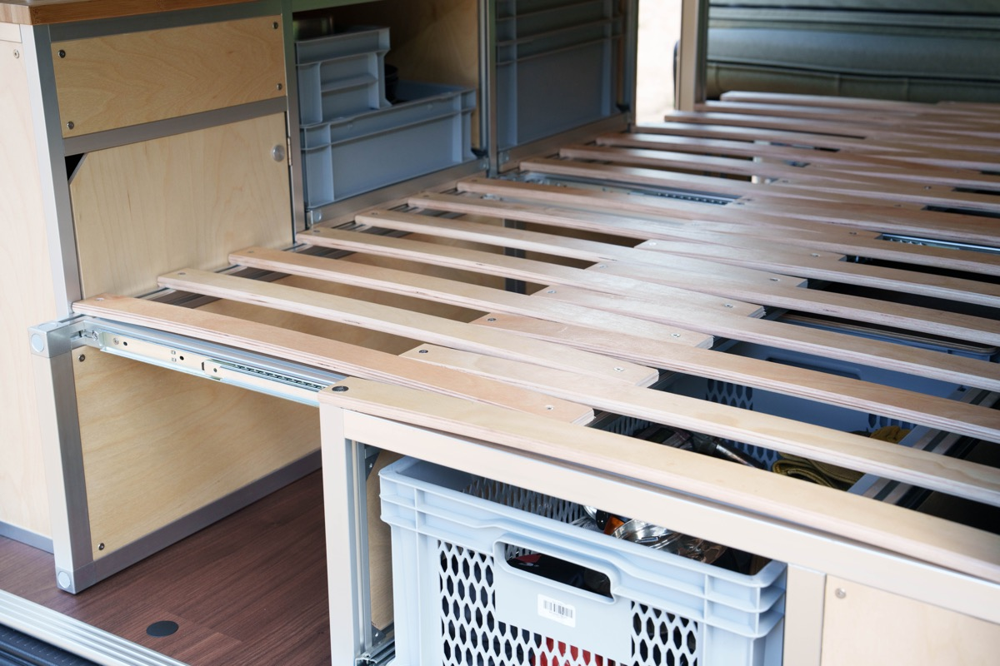
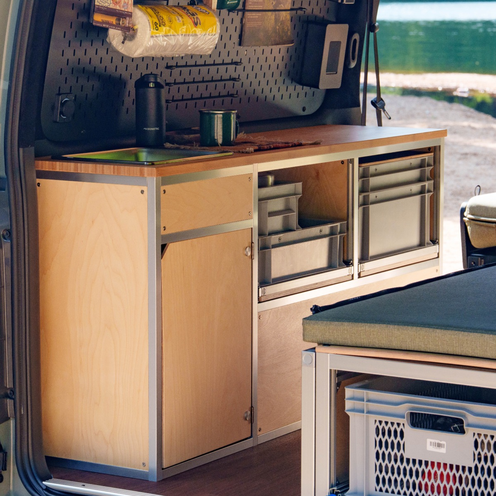
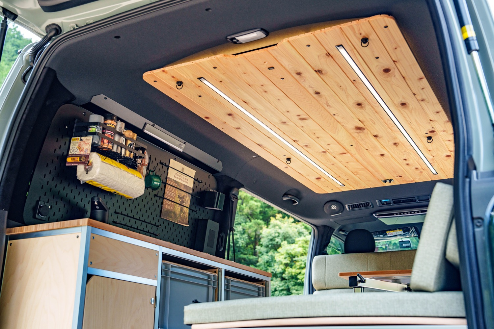
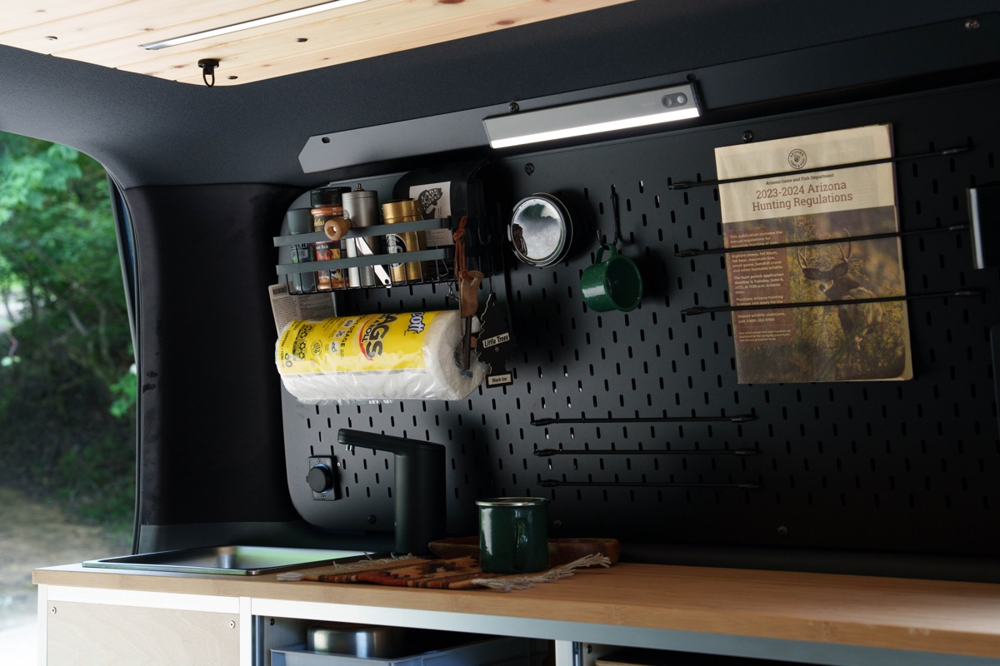
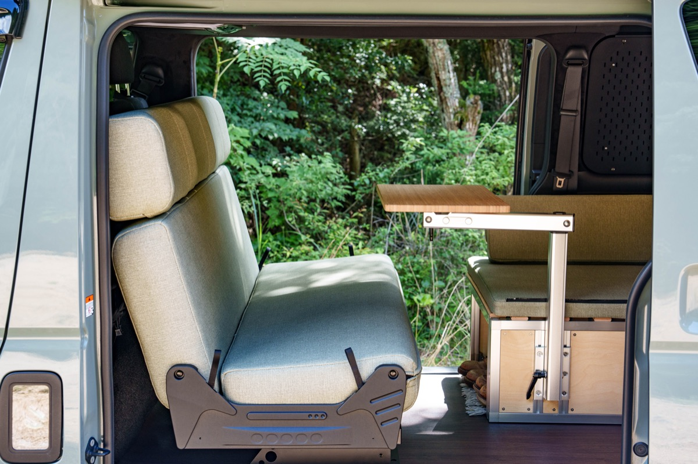

01 / Hexa
アルミスライドアウトベッド
くつろぐときはコンパクトに、眠るときは広く。スライドして使う、Hexaのアルミフレームベッド。
COMPLETE VAN / Hexa × TWI craft
Built for Your Style of Life.
Hexaのモジュール家具と、TWI craftが手がける内装。ハイエース スーパーGLをベースに、くつろぎも、収納も、移動もひとつにした完成車です。

FURNITURE & INTERIOR
ベッドとキッチン収納はHexa。檜天井とクォーターパネルはTWI craft。それぞれのものづくりを、ひとつの車内に。

01 / Hexa
くつろぐときはコンパクトに、眠るときは広く。スライドして使う、Hexaのアルミフレームベッド。

02 / Hexa
シンクとユーロコンテナ収納をひとつに。道具を整理しながら、車内のキッチンとして使えます。

03 / TWI craft
天然の木目が広がる檜の天井。TWI craftが仕上げる内装が、車内にやわらかな表情を添えます。

04 / TWI craft
手の届くところに、いつもの道具を。TWI craftのクォーターパネルが、収納と使いやすさを支えます。

SIT. RELAX. GO.
セカンドシートを備えた、8ナンバーモデル。シートの向きを変えれば車内はリビングに。Hexaのスライドアウトベッドと合わせて、過ごし方に応じた空間が広がります。
A CLOSER LOOK / Grid.
ベッドや収納の動き、素材の質感、つくり手のこだわり。実車を見ながら、Grid.の使い心地をご紹介します。
紹介：みるみるランド · 約26分／日本語
動画内の名称・仕様・価格は撮影当時のものです。
YOUR NEXT JOURNEY
Grid.は、Hexaの取扱店でお求めいただけます。仕様・価格・ご購入については、取扱店またはこちらからご相談ください。
企画・製造：TWI / Hexa